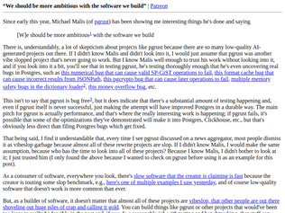
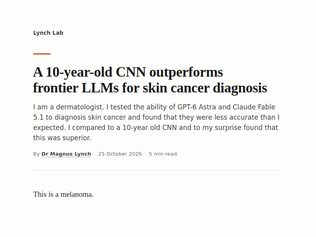
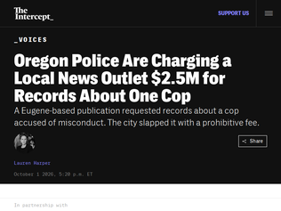
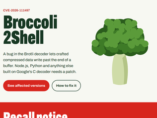

"This statement stood out to me.> I have a similar thought about "there's no reason for software to be slow" BTW; in many cases, if you use AI to speed up some flow, you will add a bunch of messy code that will be overfit for the use case you tested on and will neither generalize, perf-wise, for all the use cases you should care about, nor will be maintainable upon future changes.LLMs have hardened hundreds of apps where I work.Maybe it's a language-specific thing. Most of the time, in Java, LLMs take into consideration tradeoffs (especially if they are part of the initial prompt) and actively explains them. It generally won't make messy workarounds, without a lot of extra prompting forcing it to do so.Ofc, if you have:- Functional tests - you'll be able to see it in the execution times of specific APIs- Stress testing - performance profiling is the most important output artifact"
"More than ambitious, I can now build things I had no time for but had the idea and architecture in place since long. A cool side project for me recently has been to allow reading more than books on my Kobo reader. I built an SDK and apps that allows e-ink apps with sandboxing and permissions model, auto-updates, shared capabilities etc. to be built for Kobo https://github.com/BandarLabs/Cobalt"
"We should be more diverse with the software we build.Any prompt jockey can make a faster ripgrep. The spec is "faster ripgrep".What is the one thing that only you can specify, where your competitive advantage is maximized? Find that thing and pursue it with all your energy!"
"Btw I made the language, AMA. repo: https://github.com/aardappel/goose"
"The very first point under your tutorial is factually incorrect. var words: u8[][>..] = []; for i in 5 { words.push(str("word", i)); } In C++ that is a vector<string>: one heap allocation for the vector, one per string, a pointer and a capacity per element, and a walk over all of them when it goes out of scope. The example you've provided uses strings that are eligible for small string optimization, which avoids per-string allocation. All mainstream STL implementations perform this optimization. You can read about several implementations here: https://devblogs.microsoft.com/oldnewthing/20230803-00/?p=10..."
"I'm curious, for someone more familiar with Goose: how do you represent an arbitrary number of dynamically sized values? If you have a fixed number of stacks, it seems like only a fixed number of values can change size at any given time.For instance, how would you represent a hash table where the values are strings and at random, the program inserts or deletes a random string?This doesn't seem like something you could easily represent. The only way I can think of is to keep a stack that holds all of your strings, and you periodically compact it.Edit: Maybe you could also have a separate stack for strings of various sizes. One each for strings less than 8, 16, ... bytes. But at that point you're basically implementing your own malloc by hand.Edit: Fwiw I do think Goose is very cool! I've had to hand-roll a lot of similar stuff in Rust before to speed up memory management"
"I liked this article. I appreciate that it didn't try to say it is or isn't AI.To me, the entertainment industry suffers from a lot of the same problems in most other industries that chase "efficiency", in terms of resources used and profit made. Economies and industries and labor are interdependent and more "alive" than balance sheets and bank accounts.For the film industry, when you start moving things away from LA to "save money", it has knock on effects that happen over long periods of time. Multiple Quarterly Earnings Reports long, if you will. Local businesses that depend on the film industry close due to less work, so then there is less expertise available. Less expertise means it can command high prices. Suddenly it's too expensive to film in LA altogether. So the rest of the jobs leave too.This pattern seems super common, not just in the film industry.It is a narrative that interweaves with AI, too. AI is supposedly an efficiency boom. In the macroeconomy, who is the "efficiency" we are chasing for, who benefits? Who is getting the money that was "saved"? Regular people do not have more more money or time. The "efficiency" is for people who are already very rich, to get richer. Is that worth the price we're paying? I know my answer. The article gets close to it by mentioning the consolidation in Hollywood, but I do not see how we fix this without enforcing our antitrust laws. It is embarrassing what we let rich people do in the name of stock price go up."
"The quality of Hollywood movies has gone down substantially.I can barely watch anything on Netflix due to issues like this:"Matt Damon Says Netflix Wants Movies to Restate the ‘Plot Three or Four Times in the Dialogue’ Because Viewers are on ‘Their Phones While They’re Watching’"https://variety.com/2026/film/news/matt-damon-netflix-movies..."
"Before AI showed up the UN released a report on the Attention Economy. It said Supply of content had vastly outstripped Demand. It decoupled because entertainment/media was being used to push other products. The telcos, amazon, google/fb and many others were all subsidizing content to push some other product. Exploding info chasing finite non growing eyeballs and time."

"This is an example of why I'm a little stumped about why people are excited about Jev-style decision models. For any application at scale it'd be way more accurate to have a dedicated classifier using the right architecture (neural net, bayesian, etc.) LLMs drive the cost of making those models down to near zero.Just use the LLM to make a thing that's actually good at what you need it to do."
"> I compared to a 10-year old CNN and to my surprise found that this was superior.I'm surprised he's surprised.> A small, old, specialised network using an outdated architecture recognises skin lesions far better than two frontier LLMs.Yes of course. A 30m params Katago network with one playout is superhuman in playing go, while frontier LLMs have over 10,000 times more parameters and aren't any good at playing go. They're good at other things (such as helping you create a network that's good at playing go)."
"> I used Inception v3 pretrained on everyday photographs and then fine-tuned all layers on 68,011 dermoscopic and clinical images from the ISIC Archive on a single H100 GPU.>These 200 test lesions, and every other photograph of the same lesion or patient, were removed from its data (including the validation set) before training, so it had never seen them, and they were not used to choose the model or set its threshold.This is just benchmaxxing. A benchmaxxed model will always beat an unbenchmaxxed model, but it will be brittle.You can always beat a specific dataset with a small model by finetuning on a train/test split. But it doesn't generalize well to 'wild' images, because they are out-of-domain."
"My daughter receives books through this program and I was curious how it was sustained at a $2.5/book wholesale cost.Interestingly, the coordinating body that selects books, facilitates distribution, and negotiates wholesale pricing is the Dolly Parton Imagination Library, but per-book funding is actually entirely through local charities and so on. This means that where charities are unable to act as partners, children will not receive books, but it also means that the program can operate by growing and shrinking as local support (including from state and local government grants) comes online and goes offline while keeping the overhead for local partners low.Dolly Parton came up with the initial local structure for her region in Tennessee and David Dotson of Dollywood scaled the operation using this decentralized model. Very impressive structure that makes this sustainable.Here’s the interview where he talks about it: https://www.endbookdeserts.com/dolly-parton-imagination-libr..."
"In Tennessee hospitals a nurse, staff member, or authorized volunteer will swing by your room in the mother-baby unit and sign you up. Then you start receiving free books by mail each month until age 5. An amazing program by an amazing person!"
"My 5 year old just got his last imagination library book. It showed up right after Dolly passed away.There was a letter from Dolly to him that ended “I will always love you”. Made my wife tear up."
"> According to the petition, two people asked [Meta AI] to pick a number between 1 and 25. They gave no instructions and made no reference to the election. In one attempt, the AI answered 13. In the other, it answered 22. Those are the party ballot numbers of Lula and Flávio Bolsonaro, respectively. The groups question the coincidence.My confidence in the validity of their claims tanked right about here.I'm all for regulating transparency into social media algorithms. Meta most certainly is compromised by foreign actors. But can we choose less stupid hills to die on than numerology and GIFs? Headline is not remotely supported by the evidence."
"It's the same here. AfD content gets pushed on YT. No matter how often I ignore channels.Big tech is so rigged (intensional or not), the question if it is socially net negative has become rhetorical."
"My impression is, some Bolsonaro favoritism is real, but is it Meta’s fault or a generally-neutral algorithm (e.g. ranking based on upvotes) favoring Bolsonaro because of his supporters (or bots)? If it’s the latter, what should Facebook do?“End algorithms”? Even a firehouse of newest comment (or most upvoted as suggested) would benefit Bolsonaro if his online support outnumbers opposition. Ban both candidates from the platform, or make every search show them both? That will probably not work; confuse Brazilian citizens why their politicians are being censored (which will influence them because their politician is being attacked by Lula’s court, or even Facebook acknowledges their opponent politician is dangerous); and not end the lawsuits if they continue bringing “evidence” like Meta AI randomly generating Bolsonaro-related numbers.The most egregious evidence against Meta are suspending Lula’s official accounts. This can also be attributed to a neutral system processing opponents’ mass reports, but has an obvious solution: give every official account immunity from suspension except by the highest level admins, because they’re supposed to only be suspected according to guidelines, and a $trillion company has enough resources to closely monitor high-level official accounts."

"Some agencies have a different tactic: go really slowly.I sent a public records request to my local school district on March 9th 2026.They responded on 19th March 2026 saying they'd respond on in late April.Since then, every month they've sent an email with some small portion of the records, with a PDF letter saying they'll send a follow up a month later.I've received 8 of those responses so far, and there's no indication when, if ever, I will have received all the records responsive to my request."
"> the Eugene Police Department claimed searching for records and processing the request would take at least 44,816 hours of staff time and cost approximately $2,484,599.04.44k hours is ~21 years. Beyond absurd"
"Worth pointing out that Germany is having an ongoing battle over our FOIA equivalent, in which a host of people who were bitten badly by it (most notably Jens Spahn) are proposing to allow exactly this kind of prohibitive fee, as well as reducing access to natural persons (so the individual reporter, not the newspaper) and only to people who have a reasonable interest, etc.Sure, the current form of the law has some issues on the receiving end, but boy is this an obvious move to cover their own corruption better..."
"Is there an uncensored intetnet, because i dont think there is. if there is any, it can be turned off because its being routed on the censored net wrapped in encryption.that being said, that makes me pretty interested in this talk. outside of hacking sattelites and such things and/or infra i really dont see any opportunities to break free of the will of corporations as they can simply pay infra providers to do their bidding.I dont think software can solve all problems because internet exists essentially as informaiton transported over infrastructure. the software surely helps enable that but its a helper not the actual network.happy to learn otherwise from anyone here ofc :-)"
"Most people prefer censored internet as long as it aligns with their political leaning. Maybe that wasn't the case 15 years ago but it's pretty much true nowadays. I myself consider this as a fact."
"FOSDEM is a great conference!If you ever get the chance to go, please go! Especially if you're an American I recommend it. It is so different than any other conference I've ever been to in the US.It doesn't have a lot of sales pitches, the technical content is top notch, and overall it is really fun and interesting to see what everybody is talking about and working on."

"I see some irony here. For a period of time, Google chose not to include JPEG XL in Chrome because vulnerabilities in the library could compromise the software - a legitimate concern. Yet, Google is the author of the Brotli data compression format a decade before the JPEG XL drama, and was happy to use it in Chrome and encourage others to use the library, despite the fact that it also increases the attack surface."
"> reported it as unauthenticated remote code execution that works in both directions> but it wasn't recognized as a security issue at the time and no release shipped with the fix until nowI'm always getting my dangerous RCE bugs mixed up with my harmless RCE bugs.I'm curious how this was reported and fixed back in Feb but nobody recognized the importance. A case of AI automation and nobody at the wheel?"
"To me, the surprising part is how many of these implement brotli compression of request (not just response) bodies, given how obscure a feature that is.In any case all this sensationalism is starting to get annoying. Patch your stuff and move on.Edit: actually, between all the sensationalism, its hard to tell from the article how many of these actually support brotli compressed request bodies in common configs vs some other use of brotli (which is bad but nowhere near as critical)"
"So many entry-level explanations of quantum mechanics start with classical physics, waves, particles, the double-slit experiment, etc. and then jump straight to infinite-dimensional Hilbert spaces. In my opinion, there's way too much conceptual baggage that comes with these concepts [0].As a non-physicist, QM only clicked for me when I learned the linear algebra of one- and two-qubit systems and observables on those systems [1]. The math is accessible at a pre-calculus level, and the most "counter-intuitive" aspects of QM (interference, the uncertainty principle, entanglement) make perfect sense in this framework. I think it's the best starting point for understanding what QM really says.[0] That's not to say they aren't important historically or for a complete understanding of QM. I'm talking about conceptual understanding for someone, especially an amateur, encountering QM for the first time.[1] Chapter 2 of Nielsen and Chuang is what did it for me. It's heavygoing if you've never seen linear algebra before, but I don't know of a clearer explanation of the postulates of quantum mechanics."
"Of possible interestBasic Concepts Of Quantum Mechanics by L. V. Tarasovhttps://archive.org/details/tarasov-basic-concepts-of-quantu...The dialogues of the author engages with various personas and the reader that are interspersed as Prelude and Interludes are really enlightening.For example:Classical Physicist: Can one seriously speak about an object without having an idea of what it looks like? Isn’t it strange that we study, for example, the behaviour of an electron in a crystal while we don’ t even know what an electron actually is?Author: I don’t agree that we don’t even know what an electron is. I have just indicated a number of precisely determined characteristics and properties of an electron. More detailed properties of microparticles in general and electrons in particular were considered in the preceding sections of the book (and will be considered in the following sections). In fact, we know quite a lot about the electron and know, in particular, about its behaviour in a crystal. This is evidenced by the large number of semiconducting devices fabricated and used by us in practice. As you will see, the absence of a “physically intuitive” model of the electron has in no way turned out to be a serious obstacle. We may even go a step further and state that an understanding of natural phenomena in which Planck’s constant plays an important role is possible only through a significant rejection of a graphic description. By the way, this idea was given by Heisenberg, in whose works much attention was given to questions of the use of physically intuitive methods."
"Somewhat related: a book that really helped me is Picturing Quantum Processes by Bob Coecke. It's a visual representation of quantum processes, which really helped me understand the concept"
We should be more ambitious with the software we build
"This statement stood out to me.> I have a similar thought about "there's no reason for software to be slow" BTW; in many cases, if you use AI to speed up some flow, you will add a bunch of messy code that will be overfit for the use case you tested on and will neither generalize, perf-wise, for all the use cases you should care about, nor will be maintainable upon future changes.LLMs have hardened hundreds of apps where I work.Maybe it's a language-specific thing. Most of the time, in Java, LLMs take into consideration tradeoffs (especially if they are part of the initial prompt) and actively explains them. It generally won't make messy workarounds, without a lot of extra prompting forcing it to do so.Ofc, if you have:- Functional tests - you'll be able to see it in the execution times of specific APIs- Stress testing - performance profiling is the most important output artifact"
"More than ambitious, I can now build things I had no time for but had the idea and architecture in place since long. A cool side project for me recently has been to allow reading more than books on my Kobo reader. I built an SDK and apps that allows e-ink apps with sandboxing and permissions model, auto-updates, shared capabilities etc. to be built for Kobo https://github.com/BandarLabs/Cobalt"
"We should be more diverse with the software we build.Any prompt jockey can make a faster ripgrep. The spec is "faster ripgrep".What is the one thing that only you can specify, where your competitive advantage is maximized? Find that thing and pursue it with all your energy!"